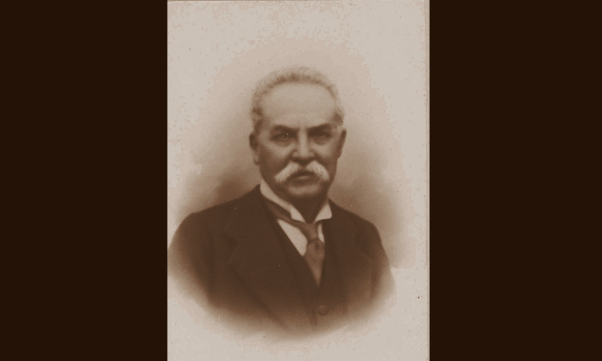

Cantoni

- Dati biografici
- Albero familiare
- Luoghi
- Relazioni
- Eventi
- Bibliografia
- Opere trattate
Achille Cantoni (1844-1914) nacque a Viadana, provincia di Mantova, da una famiglia di proprietari
terrieri di tradizione ebraica. Nel 1866, a poco più di vent’anni, partecipò come volontario
garibaldino alla Terza Guerra d’Indipendenza.
Dopo il matrimonio con Maria Cantoni, si trasferì a Milano dove cominciò a lavorare nella Banca
Zaccaria Pisa, dedicandosi parallelamente al commercio d’antiquariato, sua grande passione. Senza
mai aprire un vero e proprio negozio, tra il 1881 e il 1908 fece del suo appartamento di via Ugo
Foscolo 1, in uno degli edifici perimetrali della Galleria Vittorio Emanuele II, un crocevia per
collezionisti privati molto prestigiosi e per i curatori museali di molti musei italiani ed europei. Prima
ebbe probabilmente anche una sede in via Andegari, sempre nel capoluogo lombardo.
Nella sua casa raccolse una collezione eclettica, tipica della seconda metà dell’Ottocento e pur
trattando anche dipinti, sculture, monete e medaglie, tappeti e tessuti, si affermò soprattutto come
esperto di arte orientale e islamica. Tra i più celebri clienti e frequentatori di casa Cantoni si
annoverano collezionisti come i coniugi Jacquemart André, i Berenson, il principe Trivulzio, la
studiosa di arte tessile Isabelle Errera e Isabella Stewart Gardner; curatori di importanti musei
europei come Wilhelm von Bode a Berlino (col quale intrattenne un fitto carteggio conservato
all’Archivio Centrale degli Staatliche Museen) o Arthur Pabst a Colonia, direttori di raccolte
pubbliche di arti decorative come Julius Lessing, Karel Chytil e Giuseppe Bertini, alla guida delle
collezioni del Poldi Pezzoli. Cantoni stesso donò diversi oggetti a istituzioni pubbliche e private
milanesi, come il Regio Museo Patrio d’Archeologia, la Pinacoteca di Brera e la Società Numismatica
Italiana.
Alla sua morte, nel 1914, nessuno dei suoi cinque figli continuò l’attività paterna. Il fiore all’occhiello
delle sue collezioni, la raccolta numismatica, già oggetto di un’importante vendita href="dettaglio_SA_III.html" target="_blank">Sambon nel 1887, venne definitivamente disperso in due vendite pubbliche postume, organizzate a Roma da Pietro e Pio Santamaria nel 1920: il 26 aprile l’asta riguardò le monete italiane; il 29 novembre il nucleo più importante della collezione di monete romane.
Eventi signficativi nell'attività antiquariale:
- 1887 - Vendita Collezione Cantoni: Vendita all'asta presso Giulio Sambon di un'importante porzione della collezione numismatica di Achille Cantoni, il 25 aprile 1887
- 1920 - Vendita collezione Cantoni: Vendita delle monete italiane della collezione di Achille Cantoni, a Roma presso Pietro e Pio Santamaria, il 26 aprile 1920
- 1920 - Vendita collezione Cantoni: Vendita delle monete romane della collezione di Achille Cantoni, a Roma presso Pietro e Pio Santamaria, il 29 novembre 1920
Altri antiquari:
Clienti:
- Arthur Pabst
- Giuseppe Bertini
- Isabelle Errera
- Julius Lessing
- Karel Chytil
Collaboratori:
Bibliografia essenziale:
- Cecutti, D. (2013), Una miniera inesauribile. Collezionisti e antiquari di arte islamica. L'Italia e il contesto internazionale tra Ottocento e Novecento, Firenze, Maschietto Editore, pp. 82, 202-203, 238
- Ceriana, M. (2004), Achille Cantoni, In Ceriana Quattrini, pp. 51-52
- Clain-Stefanelli, E. E. (1985), Numismatic bibliography, Monaco, n.3653
- Di Lorenzo, A. (2002), Édouard e Nélie a Milano: i loro rapporti con gli antiquari, i restauratori e i collezionisti, in Di Lorenzo, pp. 37-45
- Sambon G. (1887), Catalogo delle monete italiane medioevali e moderne, monete estere, monete romane consolari ed imperiali, monete greche e medaglie componenti la collezione del sig. Achille Cantoni di Milano, Milano 25 aprile 1887, Milano 1887
- Santamaria P. & P. (1920), Catalogo delle monete di zecche italiane componenti la raccolta di un distinto raccoglitore defunto, in vendita all’asta pubblica, Roma 26 aprile 1920, Roma 1920
- Santamaria P. & P. (1920), Médailles romaines, aes grave, composant la collection d’un amateur décédé, Roma 29 novembre 1920, Roma 1920
Vedi le opere transitate presso l'antiquario presenti nel catalogo della Fondazione Zeri